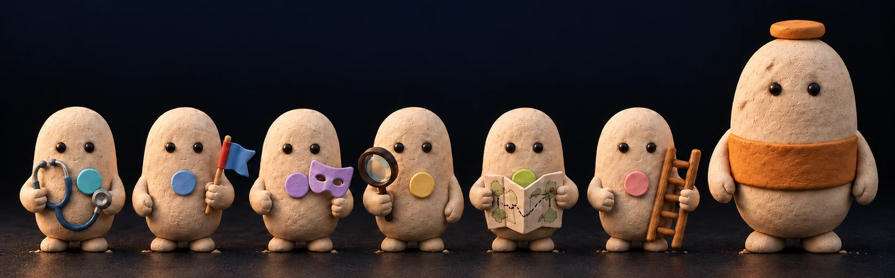
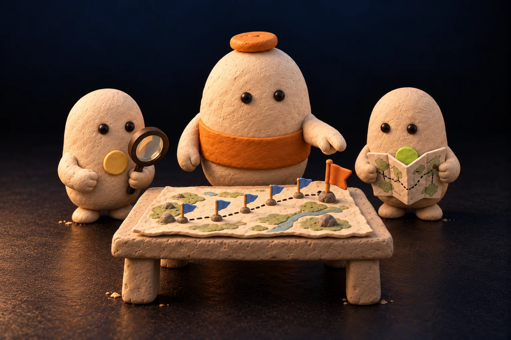
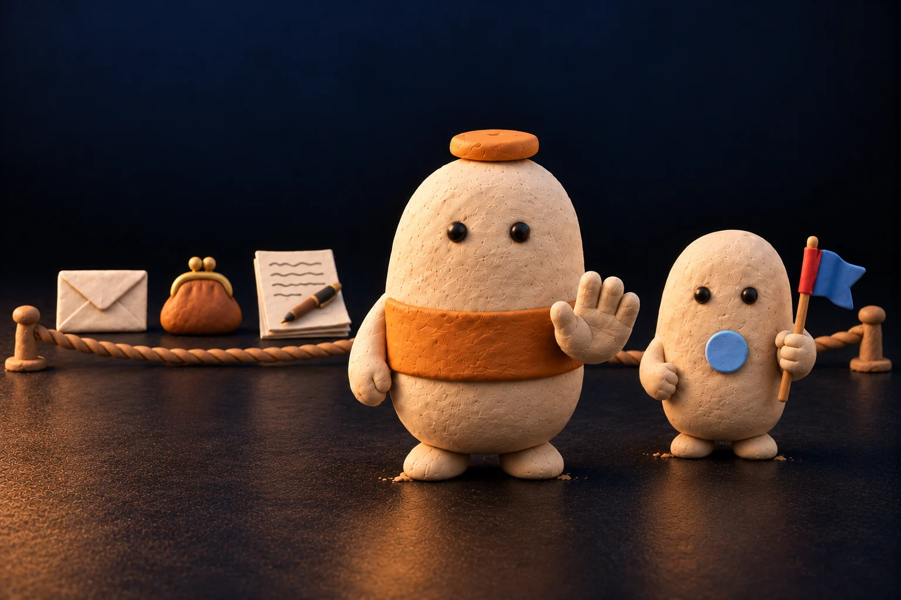
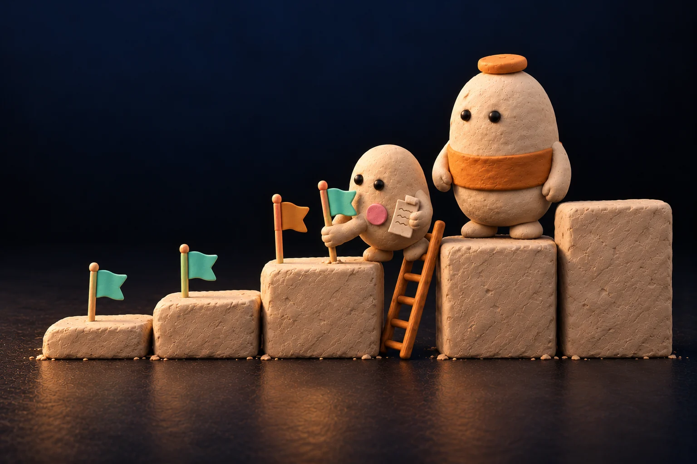

分別
與你自己逐次叫 AI 做事，有甚麼不同？
再看三項分別
你的角色
你做三件事，
準備與跟進交給 AI 團隊。
- 1
校對公司概覽
AI 先讀通你的商業模式並擬好；你按一下改、拖動排序、整頁確認。
- 2
回答問題
每批最多三題，每題附 AI 建議與理由；其餘照建議先暫定，到期再問。
- 3
交入現實
把會議紀錄與文件拖入；公司以外發生了真事，就記錄真實事件。
見客、收款、簽約仍然由你去做；AI 團隊先替你備好資料、草稿和練習。之後你隨時看到：生意去到哪裏、AI 在做甚麼、卡在哪裏、下一步你要做甚麼。
不限行業
不同行業，同一套做法。
AI 團隊先準備好，由你決定、由你去做對外的事。
美容院
AI 擬好回覆客人和預約提醒的訊息草稿，你確認才發出。
網店
AI 準備新品上架文案和同類產品價格比較，定價由你決定。
培訓課程
AI 起好企業提案和課程大綱，再扮客戶陪你練習，由你去見客。
企業服務
AI 擬好合作簡介和報價草稿，寄不寄、何時寄由你決定。
產品畫面
要你做的事和生意進度，一頁看清。
第一組收齊要你做的事，第二組看公司怎樣運作，第三組是參考。每件要你做的事都有一個按鈕，按下去就完成。
公司現況
- 答四條問題：現在做甚麼、卡在哪裏、誰要決定、依據在哪裏。
- 運作環只在 AI 真正工作時才亮起。
- 即時事件流、各範疇狀態一覽、生意大腦摘要。
全部在同一個頁面。在 AI 對話輸入 /startup-os:desk 開到待決事項，輸入 /startup-os:dashboard 開到公司現況。
生意大腦
六位成員，幫你想生意。
每張結果卡都可以回應「有用／沒有用／要修改」，AI 下次工作會參考你的意見。

找出生意最弱的環節，以及成本最低的測試。
讓 AI 分成正反兩方辯論你的生意方案，再把批評整理成改進建議。
AI 代入對方身份，陪你練習下一次會面。
上網找政策、資助、時間窗與競爭空隙。
路線分岔時擬兩至三條路線，先經反方挑戰，再由你選擇。
每個客戶或伙伴推進到哪一步、本週下一步做甚麼。
我們相信生意目標是起點，真實發生的事決定下一步。
AI 可以自己動，但不會白做，也不會越權。

有目標
先問清楚本季目標與里程碑；里程碑只認公司以外真實發生的事，例如簽約、付款、對方書面答覆。
有節奏
AI 按你定的時間自己開工；連續兩次做不出新進展，就停下來問你。

有邊界
對外發送、花錢、承諾、改路線，一律先問你；AI 不會代你答應、簽署或付款。

有證據
只有你的確認或對方的證明才算進展；做好文件只是工作，不等於有人需要。
怎樣開始
四步開始，每一步的下一步都在畫面上。
除了第一次裝插件，全程只在 AI 對話與頁面上操作。
安裝
先在 Claude Code 安裝 startup-os 插件（每部電腦一次）；再到你項目的 AI 對話輸入 /startup-os:install，答「好」，並批准每日排程。
下一步按「前往設定」
設定 AI
按「前往設定」到系統分頁，選擇 Claude Code，按「設定 AI」；系統逐項檢查，全部通過就可以交資料。
下一步按「交資料」
交資料與校對
填五條必填，或拖入現有文件；AI 擬好公司概覽，你校對三題、整頁確認。
下一步驗收第一份產出
每日打開
AI 每晚按排程開工；你每日輸入 /startup-os:desk，看上次離開之後發生了甚麼，回答等你的問題。
下一步看公司現況
常見問題
用之前，你可能想知道。
AI 用量
- AI 工作用你自己的 Claude Code 帳戶額度。
- 每次工作最長 30 分鐘，每日最多開工 40 次。
- 系統分頁列出每次開工的時間、用時與結果。
資料去了哪裏
- 公司紀錄存放在你項目內的 startup-os 資料夾。
- AI 工作時，相關內容交給你選用的 AI 工具處理；商機掃描等工作會上網讀取公開資料。
- startup-os 不會把你的資料發送給其他人。
想停下來，或者出錯
- 連續兩次做不出新進展，AI 會停下來問你，你可以選擇暫停。
- 不想每晚自動開工：在 AI 對話輸入「移除排程」。
- 工作出錯會寫明原因，可按「重試」。完全移除：先移除排程，再刪除項目內的 startup-os 資料夾。